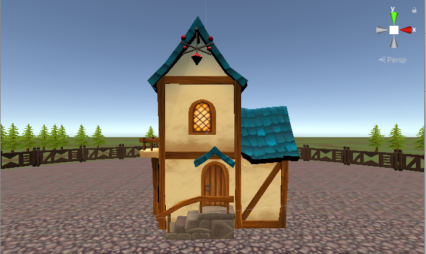
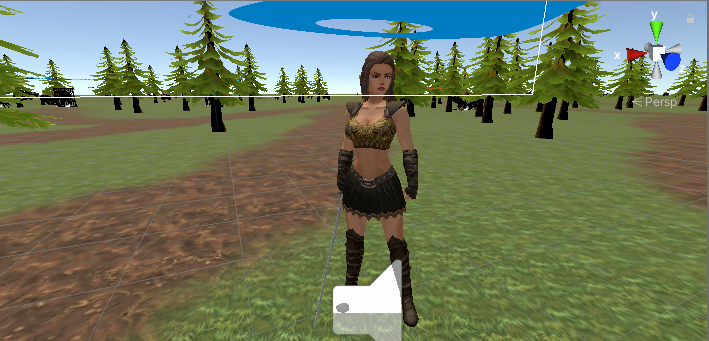

Hello everybody!!! The whole civilized world knows that at the end of February 2022, a full-scale war between Russia and Ukraine began. Many countries help us to resist and win victory over the enemy. Ukraine has united like never before. Many foundations and volunteers have appeared in Ukraine, which help our soldiers on the battlefield with all their might. People gave the last funds they had saved to the army. The whole country is making efforts to bring us closer to victory. But at present, people do not have such funds to donate to the Armed Forces. I thought that it would be good if everyone could support the Armed Forces without having any money. A decision was made to create a game with advertisements so that people who have smartphones could simply play the game, watch advertisements, and help the Armed Forces in their free time. All funds earned from advertising will go to the needs of the Armed Forces. All details will be in Discord.
Save the Butterfly
How to play the game::
You need to free the butterflies from the cages, which were stolen by orcs in the settlement. Also fight wolves and bears for coins. Crystals are obtained from freed butterflies and can also be found in chests just like coins. In the house panel, there will be an opportunity to increase your skills: speed, attack, armor, health and level of the house. By increasing the level of the house, you increase the maximum number of coins and crystals, as well as health. The main thing is to monitor your health and pump up your level and skills.
The game is currently in the testing stage, if everything works well without bugs and errors then it will be a full game. Report all game bugs and errors in Discord in a special section so that you can fix your nuances on different devices.
House
Player
Wolf

Beer

Troll

Coffer

Please spread this information as much as possible!!!
The more of us, the more funds for the Armed Forces.
Download the game: Save the Butterfly
Enter the Discord channel: Discord
Video game: You tube video
Donate to support the project and the Armed Forces:
Private bank: 5167 9855 6136 1379 - Volodymyr.